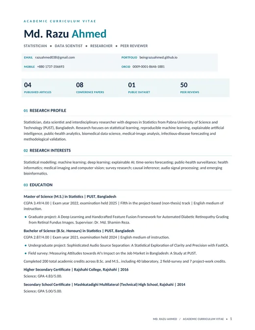
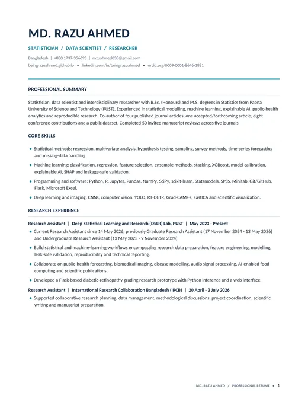

Academic Curriculum Vitae
Research-focused editorial design with refined typography, 50-review milestone, verified appointments, publications, conferences and professional development.
Statistician · Data Scientist · Researcher · Peer Reviewer
Two redesigned, source-verified documents for Md. Razu Ahmed. The academic CV uses restrained editorial styling; the ATS resume preserves clear single-column text for electronic screening.

Research-focused editorial design with refined typography, 50-review milestone, verified appointments, publications, conferences and professional development.

ATS-conscious professional design with readable headings, verified research experience and analytical keywords.
Use the academic CV for university and research appointments; adapt the ATS resume's summary and keywords to each vacancy before applying. ATS readability does not guarantee a screening score or interview.
Statistician, data scientist and interdisciplinary researcher with B.Sc. (Hons.) and M.S. degrees in Statistics from Pabna University of Science and Technology (PUST). Research spans statistical modelling, machine learning, deep learning, explainable AI, public-health analytics, biomedical data science and health informatics, with emphasis on rigorous, reproducible and leakage-aware validation.
Loading verified portfolio statistics…
Completed invited reviews across five journals. Individual journal records and available certificate evidence are linked below.
This CV contains public academic records only. Manuscripts in the editorial process are reported separately from accepted and published work.